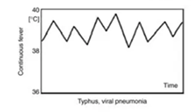
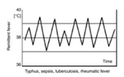
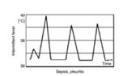
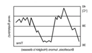
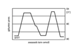
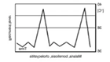

發燒
2025年2月15日
下午 09:55
|
可能病因 |
發燒pattern |
病程 |
問診內容 |
身體檢查 |
檢查安排/治療 |
|
細菌、病毒感染 |
Continuous

|
持續高燒，但波動不超過 1°C。 |
最近的症狀（咳嗽、喉嚨痛等），接觸史，疫苗接種情況。
|
全身檢查：呼吸音、咽喉檢查等。
|
血液檢查（CBC、CRP）、胸部X光。抗生素或抗病毒治療。
|
|
心內膜炎、病毒感染 |
Remittent (弛張性發燒)

|
高燒，但體溫波動超過 1°C 且不恢復至正常體溫。 |
發燒時間長短，出現症狀的頻率，心臟病史。
|
心臟檢查、聽診、皮膚檢查。
|
血液培養、心臟超音波。抗生素治療。
|
|
TB、JIA |
Intermittent (間歇性發燒)

|
體溫週期性升高，間隔恢復至正常體溫。 |
發燒週期，是否夜間發作，過去的感染或旅行史。
|
淋巴結檢查、肝脾檢查。
|
血液檢查、痰液檢查、X光或CT。抗生素或抗結核治療。
|
|
布氏桿菌 |
Undulant (波狀性發燒)

|
體溫緩慢波動，有高燒與正常體溫之間的變化。 |
職業（如農場工作）、接觸動物或未消毒的乳製品。
|
關節檢查、肝脾檢查。
|
血清檢測（布魯氏菌抗體）。長期抗生素治療。
|
|
登革熱 |
Biphasic (雙峰性發燒)

|
體溫分為兩個高峰期，期間有恢復或接近正常體溫的間隔。 |
蚊蟲叮咬史、旅行史，症狀如關節痛、肌肉痛。
|
全身檢查，尤其是皮疹與淋巴結。
|
血液檢查、Dengue NS1抗原檢測。支持性療法。
|
|
霍金氏淋巴瘤、蜱媒疾病 |
Recurrent (復發性發燒)

|
發燒會有間歇性地重複出現，可能間隔數天、數週甚至數年。 |
發燒發作的頻率、持續時間、動物或蟲咬接觸史。
|
淋巴結檢查、脾臟檢查。
|
血液培養、影像檢查（CT、PET）。抗生素或化療。
|
若給小朋友 ibuprofen syrup要用體重÷4=cc 數，Q6H給藥
使用 OneNote 建立。